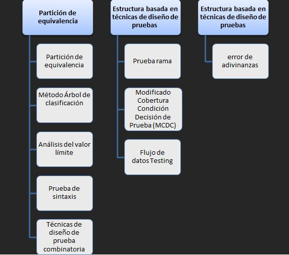

Es una norma estándar internacional que cubre las técnicas de diseño de pruebas de software que pueden ser utilizados durante el proceso de diseño de la prueba y la implementación dentro de cualquier organización o modelo de ciclo de vida de desarrollo de software.
ISO / IEC / IEEE 29119-4 cubre una variedad de técnicas de pruebas de software dinámico de uso común:
Es una técnica de prueba que divide el dominio de entrada de un programa en clases de datos de los que se pueden derivar casos de prueba.
El método de árbol de clasificación consta de dos pasos principales:
Esta Técnica prueba la habilidad del programa para manejar datos que se encuentran en los límites aceptables. En lugar de seleccionar cualquier elemento de una clase de equivalencia, el AVL lleva a la elección de casos de prueba en los extremos de la clase
supone la comprobación de las entradas del sistema y por lo general está automatizado porque las pruebas de sintaxis produce un gran número de pruebas. insumos internos y externos tienen que ajustarse a los formatos siguientes:
Es una combinatoria método de pruebas de software que, para cada par de parámetros de entrada a un sistema (típicamente, un software algoritmo ), pruebas de todas las posibles combinaciones discretas de esos parámetros.
Su objetivo es garantizar que cada uno de los posibles rama de cada punto de decisión se ejecuta asegurar al menos una vez y por lo tanto que se ejecuta todo el código accesible. Ayuda a la verificación de todas las ramas en el código de asegurarse de que ninguna rama conduce a un comportamiento anormal de la aplicación.
es un conjunto de estrategias de prueba basados en la selección de caminos a través de flujo de control del programa con el fin de explorar las secuencias de eventos relacionados con el estado de las variables u objetos de datos
Error adivinar es una técnica de prueba que hace uso de la habilidad de un probador, la intuición y la experiencia en la prueba de aplicaciones similares para identificar defectos que pueden no ser fáciles de captar por las técnicas más formales. Por lo general se realiza después de las técnicas más formales se han completado.